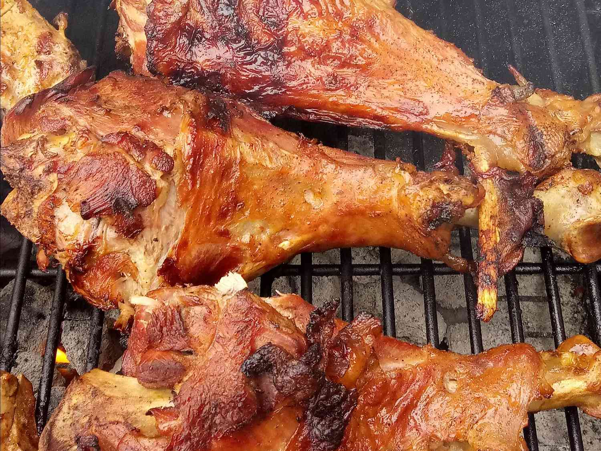

Grilled Turkey Legs Recipe

Description
These spicy turkey legs are sweet and hot—just like the smoked turkey legs
you get at the fair or theme park!
Ingredients
-
1 (2 liter) bottle lemon-lime flavored carbonated beverage
- 2 tablespoons sugar
- 2 tablespoons hot sauce
- 1 tablespoon crushed red pepper flakes
- 1 tablespoon black pepper
- 1 large sweet onion, sliced
- 4 turkey legs
- 2 tablespoons honey
- 1 tablespoon steak seasoning
Steps
- Preheat an outdoor grill for high heat, and lightly oil grate.
-
In a large pot, mix the lemon-lime flavored carbonated beverage, sugar,
hot sauce, red pepper, pepper, and onion. Place the turkey legs in the
mixture, and bring to a boil. Cook 30 to 45 minutes, until the turkey
has reached an internal temperature of 180 degrees F (80 degrees C).
-
Remove onion slices from the mixture, and arrange on the prepared grill.
Place turkey legs over the onions. Drizzle with honey, and season with
steak seasoning. Cook, tuning once, 20 minutes, or until a crisp browned
crust has formed on the turkey legs.
Return to Home Page